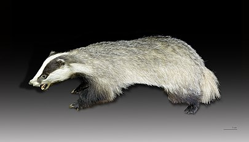
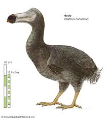
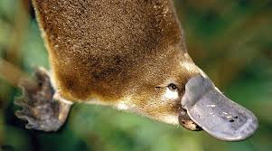
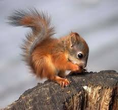

ცხოველების ენციკლოპედია
ზოოპარკი, ზოოლოგიური პარკი — სამეცნიერო-საგანმანათლებლო დაწესებულება, სადაც ვოლიერებში ან გალიებში, ან ბუნებრივ გარემოს მიმსგავსებულ დიდ ფართობებზე სადემონსტრაციოდ, სამეცნიერო მიზნით ან გასამრავლებლად ჰყავთ გარეული ცხოველები. ზოგიერთ ზოოპარკში შინაური ცხოველებიც არიან. ზოოლოგიური ბაღისაგან განსხვავებით ზოოპარკი დიდი ტერიტორიითა და ცხოველების მრავარიცხოვანი კოლექციით განსხვავდება. ზოოპარკებში სწავლობენ ცხოველთა ბიოლოგიას, სამეურნეო მნიშვნელობას, პროპაგანდას უწევენ მათ დაცვას, გარდა ამისა, დიდი ყურადღება ექცევა გადაშენების გზაზე მდგომი ცხოველების დაცვასა და მოშენებას. მაგ., ზოოპარკის პირობებში გადაურჩა ამოწყვეტას პრჟევალსკის ცხენი (მისი ერთი ეგზემპლარი დღეს თბილისის ზოოპარკშიც ჰყავთ[1]), ჰავაიური ღერღეტი და სხვ. ზოოპარკებში ტარდება ექსკურსიები, ეწყობა ლექციები და სხვ. ზოოპარკების წინამორბედად ითვლება სამხეცეები. დიდი ზოოპარკები ჰქონდათ ძველ ეგვიპტეში ჯერ კიდევ 3500 წლის წინათ. 3000-ზე მეტი წლის წინათ ჩინეთში იყო ზოოპარკი, რომელსაც „ცოდნის ბაღს“ უწოდებდნენ. 2010 წლის მონაცემებით მსოფლიოში დაახლოებით 1300 ზოოპარკია, რომელთა ნახევარი ევროპაში, ხოლო 20% ჩრდილოეთ ამერიკაში მდებარეობს.[2] ევროპაში უძველესია ვენის ზოოპარკი (1752), შემდეგ მადრიდის (1774), პარიზის (1793), ლონდონის (1828), ამსტერდამის (1838), ბერლინის (1844), ჰამბურგის (1863), მოსკოვის (1864), სანქტ-პეტერბურგის (1865), ნიუ-იორკის (1865), ბუდაპეშტის (1887) და სხვ. ზოგიერთ ქალაქში რამდენიმე ზოოპარკია.
მაჩვი
home 
მაჩვი (ლათ. Meles meles) — მტაცებელი ძუძუმწოვარი კვერნისებრთა ოჯახისა. მისი სხეულის სიგრძეა 90 სმ, მასა 30 კგ-ს აღწევს. გვხვდება ევროპასა და აზიაში. საქართველოში ზღვის დონიდან 2750 მ-მდე ადის. უმეტესად ბინადრობს ტყეებში, ველებსა და ნახევრად უდაბნოებში. სოროს ნიადაგში თხრის. იკვებება მცენარეული საკვებით და წვრილ-წვრილი ცხოველებით. მაკეობა წლამდე გრძელდება. შობს 2-6 ნაშიერს. მავნე მწერების განადგურებით სარგებლობა მოაქვს. მაჩვის ცხიმს სამკურნალო თვისება აქვს, ბალნისაგან ფუნჯებს ამზადებენ, იყენებენ ტყავსაც. ქვესახეობებიდან საქართველოში გვხვდება ამიერკავკასიური მაჩვი (Meles meles minor) და ჩრდილოკავკასიური მაჩვი (Meles meles casicus).
ჩანთოსანი ჭიანჭველაჭამია
home

ჩანთოსანი ჭიანჭველაჭამია (ლათ. Myrmecobius fasciatus) — ძუძუმწოვარი ცხოველი ორმჭრელი ჩანთოსნების რიგისა. მისი სხეულის სიგრძე 27 სმ, კუდისა — 17 სმ, მასა 250 გ აღწევს. სხეულის შეფერილობა მორუხო ყავისფერია, ზურგზე თეთრი განივი ზოლები დასდევს. ფეხები მოყვითალო თეთრია. გავრცელებულია დასავლეთ და სამხრეთ-დასავლეთ ავსტრალიაში. ცხოვრობს უდაბნოსა და ევკალიპტის ტყეებში. ერთადერთი სახეობა ჩანთოსნების რიგისა, რომელსაც ჩანთა არ აქვს. მრავლდება წელიწადში ერთხელ, შობს 4 ნაშიერს, რომლებიც პირველ ხანებში დედის ძუძუებზე არიან ჩამოკიდებული და მატყლში ჩამალული. შემდეგ დედას ისინი პატარა სოროში გადაჰყავს, სადაც მთავრდება მათი განვითარება. ძირითადად ტერმიტებით იკვებებიან. ჩანთოსანი ჭიანჭველაჭამიის რაოდენობა თანდათან კლებულობს.
დოდო
home 
დოდო ან მავრიკული დრონტი (ლათ. Raphus cucullatus) — გადაშენებული ფრინველი. მის შესახებ პირველი ინფორმაცია 1681 წლიდან მოგვეპოვება. როგორც ირკვევა, მისი სამშობლო ინდოეთის ოკეანეში მდებარე კუნძული მავრიკი იყო. ზრდასრული დოდო 20-25 კგ იწონიდა, ხოლო სიმაღლე ერთ მეტრს აღწევდა. მას ჰქონდა მასიური ნისკარტი და დიდი თვალები. დოდოს ფრთები მძიმე იყო. მისი მკერდით თუ ვიმსჯელებთ, მას ფრენა არ შეეძლო, რადგანაც ჰქონდა სუსტი მკერდის ძვალი და მის წონას ფრენის დროს ვერ გაუძლებდა. მეცნიერები ფიქრობენ, რომ დოდო წარმოიშვა ისეთი ფრინველისგან, რომელსაც ფრენა შეეძლო. მეცნიერების ვარაუდით დოდო ისეთ ადგილას დასახლდა, სადაც არ იყო მტერი და ადვილად მოიპოვებოდა საკვები. ამის გამო ისინი არ იწუხებდნენ თავს ფრენისთვის, რის შედეგადაც დოდოებმა ფრენის უნარი დაკარგეს. დოდო სახელი წარმოიშვა „დოუდოსგან“, რაც ესპანურად სულელს ნიშნავს. დოდო გადაშენდა მას შემდეგ, რაც მეკობრეებმა კუნძულზე კატები და სხვა შინაური ცხოველები შემოიყვანეს. მასზე ნადირობდნენ ადამიანებიც, რადგან მისი ხორცი ძალიან გემრიელი იყო. ის მხოლოდ ერთ კვერცხს დებდა, რამაც დააჩქარა მისი გადაშენება.
იხვნისკარტა
home 
იხვნისკარტა (ლათ. Ornithorhynchus anatinus) — ძუძუმწოვარი ცხოველი ერთგასავლიანების ქვეკლასისა. მისი სიგრძე 45 სმ აღწევს. აქვს გაბრტყელებული სხეული, მოკლე ფეხები, საცურაო აპკით გაერთიანებული თითები, გრძელი და ბრტყელი რქოვანი ნისკარტი. სხეული შემოსილია უხეში ფაცახით, რომლის ქვეშ ნაზი თივთიკია. ფერად მუქი მურაა. იკვებება ნაირგვარი ცხოველებით. გავრცელებულია ავსტრალიასა და ტასმანიაზე. კარგად ცურავს და ყვინთავს. ბინადრობს სოროში. მრავლდება წელიწადში ერთხელ, დებს 1-2 კვერცხს. ნაშიერს კვებავს რძით.
დღნაჩვი
home 
ციყვის შვილს დღნაჩვი ქვია